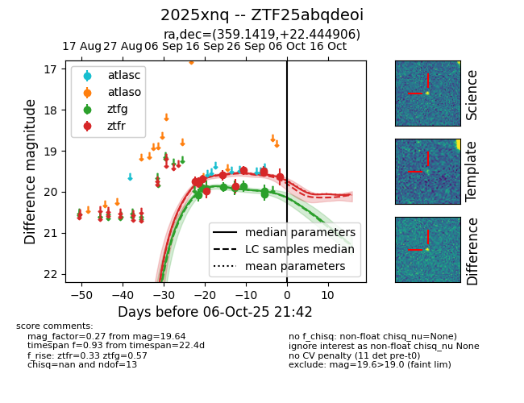
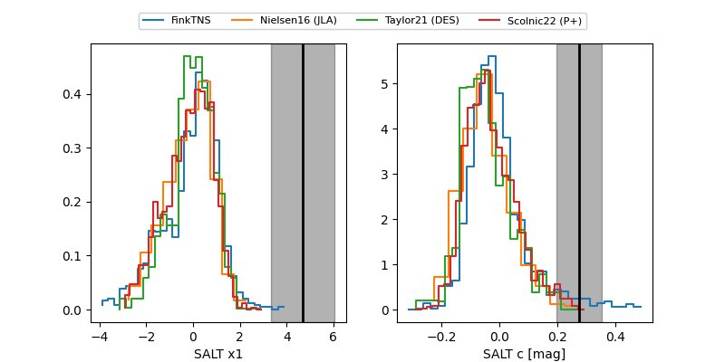

FINK: ZTF25abqdeoi
Lasair: ZTF25abqdeoi
ALeRCE: ZTF25abqdeoi
TNS: 2025xnq
YSE: 2025xnq
ZTF25abqdeoi (ztf,fink)
2025xnq (tns,yse)
equatorial (ra, dec) = (359.1419,+22.44491)
galactic (l, b) = (106.6258,-38.68320)


last ztfg=19.99, ztfr=19.64
8 ztfg, 10 ztfr detections